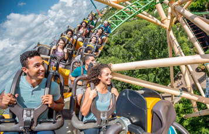
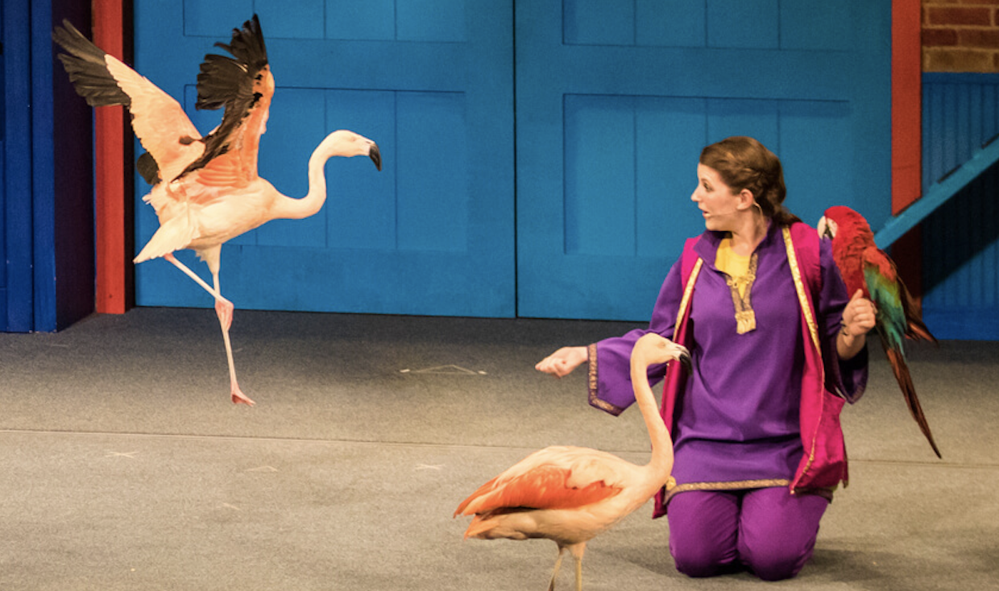
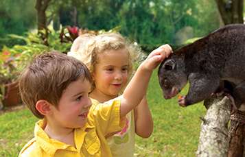
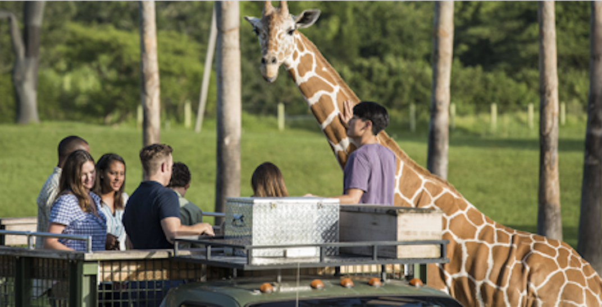

Busch Gardens Tampa (formerly known as Busch Gardens Africa and Busch Gardens: The Dark Continent) is a 335-acre (136 ha) African-themed animal theme park located in the city of Tampa, Florida. Busch Gardens Tampa is owned and operated by SeaWorld Parks & Entertainment and is their 2nd largest park in terms of attendance behind SeaWorld Orlando. The park officially features eight roller coasters and two water rides amongst other rides and animal attractions. Its newest roller coaster, Cobra's Curse, opened in June 2016.
|  |
Rides and Roller CoastersFLORIDA'S BEST THRILL RIDES |
|  |
World-Class ShowsFAMILY FRIENDLY SHOWS TAKE THE STAGE DAILY |
|  |
Animal ExperiencesMAKE AN INSPIRING CONNECTION |
EventsLOOKING FOR NEW THINGS TO DO IN TAMPA BAY? |
|
|  |
Safaris and ToursIMMERSIVE TOURS, ENRICHING ENCOUNTERS |
Group EventsEDUCATIONAL EXPERIENCES FOR STUDENTS, TEACHERS & YOUTH GROUPS |
It is Tampa's most popular wildlife theme park. There is a world-class thrilling roller coaster and a South American-inspired live performance. It can be said to be an all-encompassing playground, or it can be said to be one of the largest zoos in North America.
SINGLE-PARK TICKET: $79.99
Single-Park Ticket + EAT FREE: $104.99
Mon-Sat 10AM–8PM
Sun 9AM–8PM